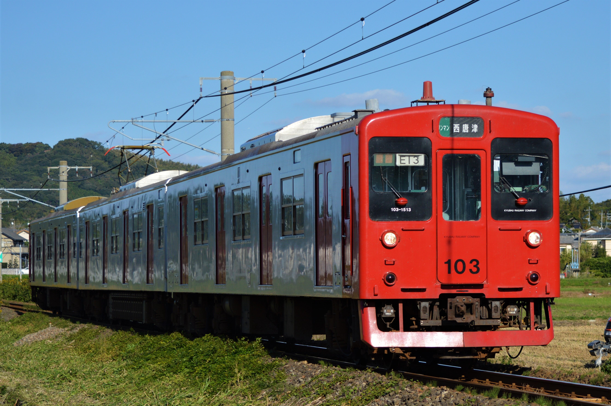
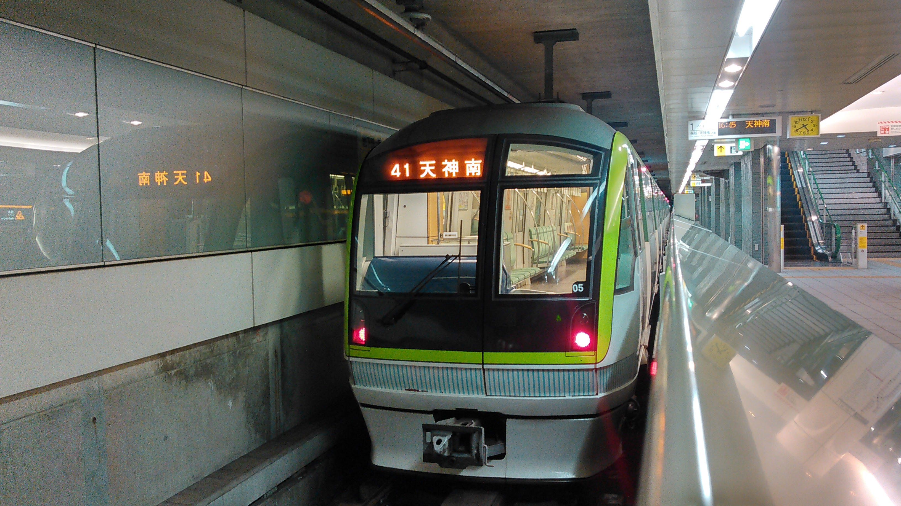

BVE 筑肥線(唐津線)

筑肥線とはJR九州が所有、運営する路線である。西唐津～久保田は唐津線であり筑肥線は唐津～姪浜である。
このデータはBVE5 筑肥線を再現したデータです。現在(2020年11月現在)唐津線の西唐津～唐津間を公開しております。唐津より先は制作中です。しばらくお待ちください。
download↓
BVE筑肥線
BVE 福岡市地下鉄七隈線

七隈線は福岡市が運行する地下鉄である。リニアを採用しているため線路の間に磁石が設置されている。
このデータは天神南～薬院大通を再現しております。薬院～薬院大通はベータ版になりますので車内放送はありません。たぶんこれより先伸ばすつもりない(ﾎﾞｿｯ)
download↓
通常版
BVE七隈線
自動運転Version(ベータ版)/p>
BVE七隈線ATO
戻る